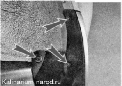
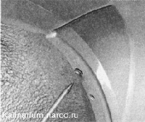
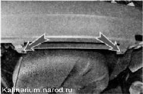
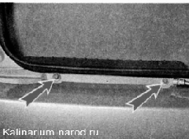
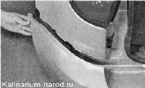
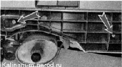

Задний бампер - снятие и установкаРаботу удобнее выполнять с помощником. Так же для удобства работы можно снять задние колеса. Снятие 1. Подготавливаем автомобиль к выполнению работы. 2. Ключом TORX Т20 отворачиваем три самореза крепления брызговика заднего колеса и снимаем брызговик.  3. Аналогично снимаем брызговик с другой стороны заднего бампера. 4. С правой и левой сторон автомобиля крестовой отверткой отворачиваем два самореза крепления бампера. 
5. Торцовым ключом на 10 мм отворачиваем два самореза нижнего крепления бампера.  6. Тем же ключом отворачиваем четыре самореза верхнего крепления бампера.  7. С двух сторон автомобиля выводим кромки бампера из зацепления с задним крылом и снимаем бампер. 8. Торцовым ключом на 10 мм отворачиваем три гайки крепления усилителя бампера к кузову и снимаем усилитель. 
Установка Устанавливаем задний бампер в обратной последовательности. |